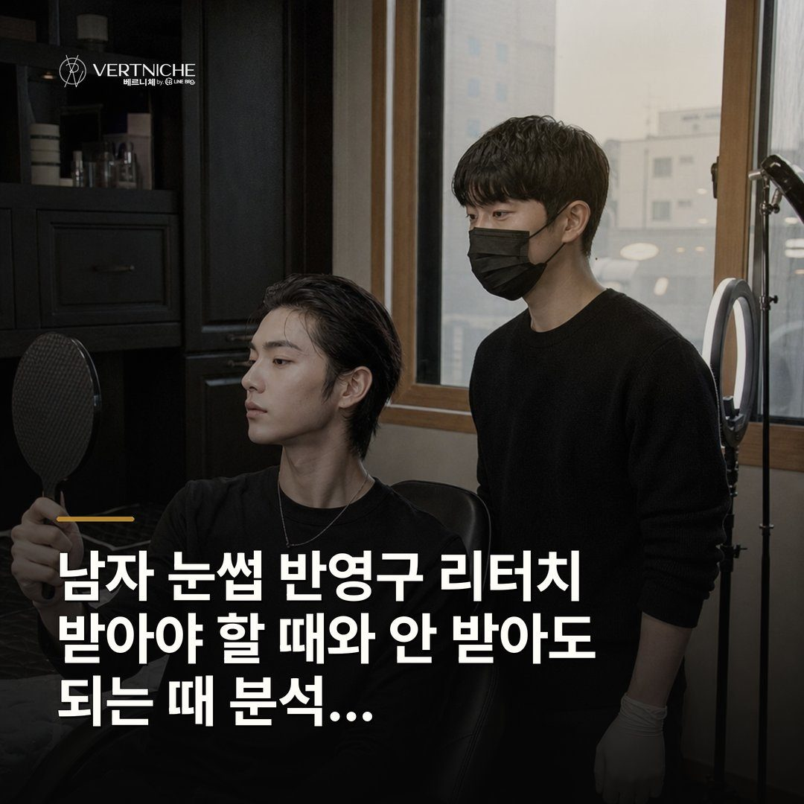
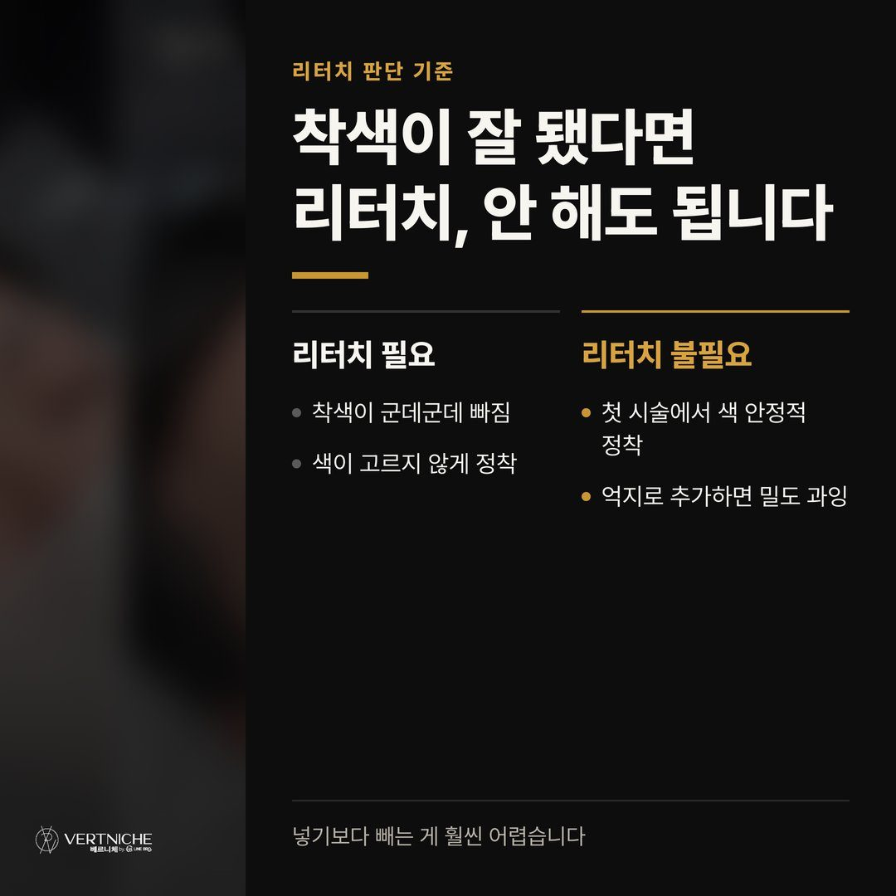
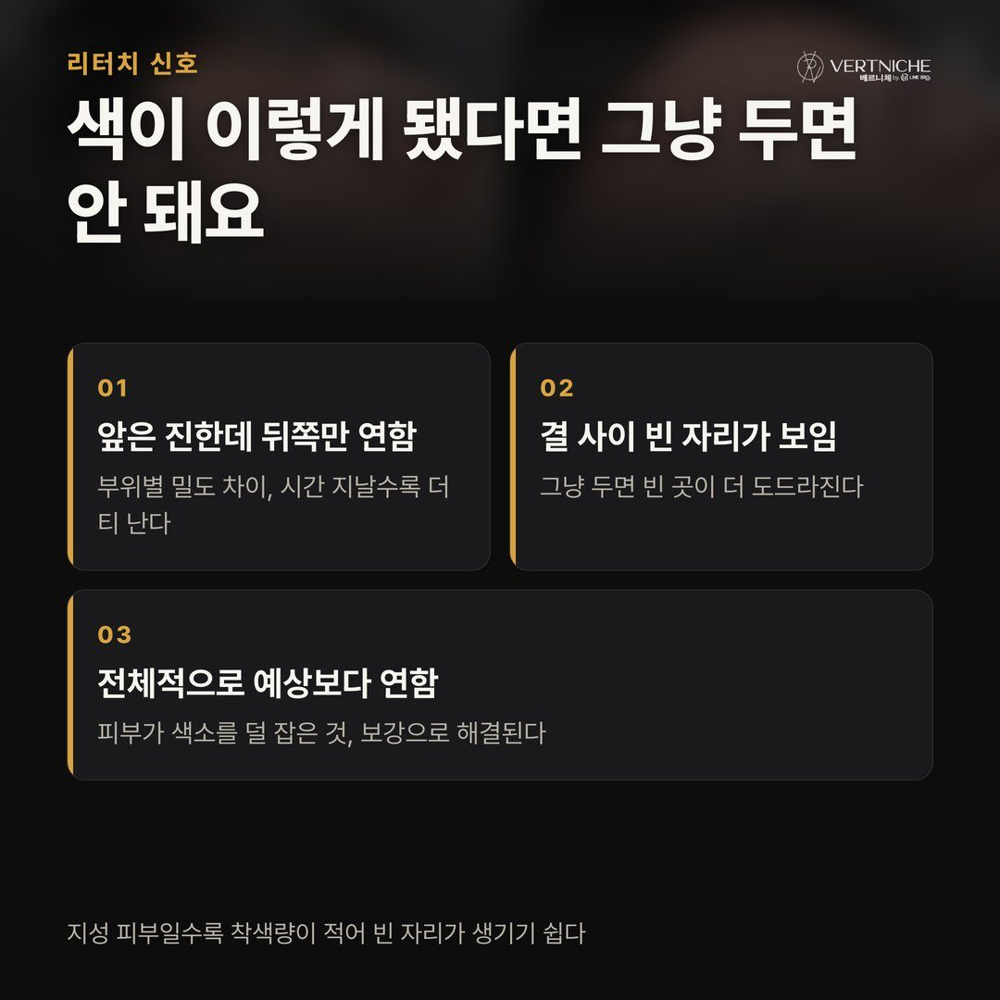
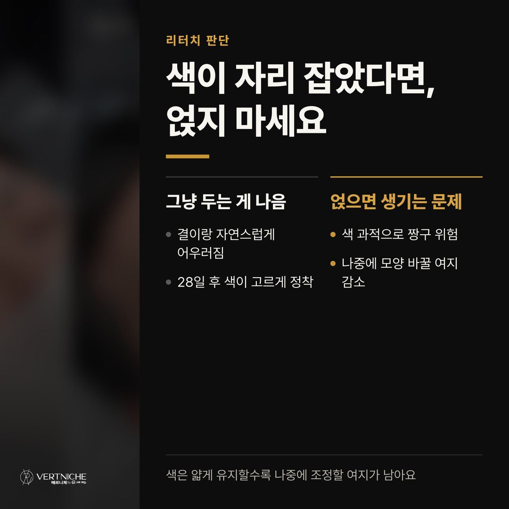
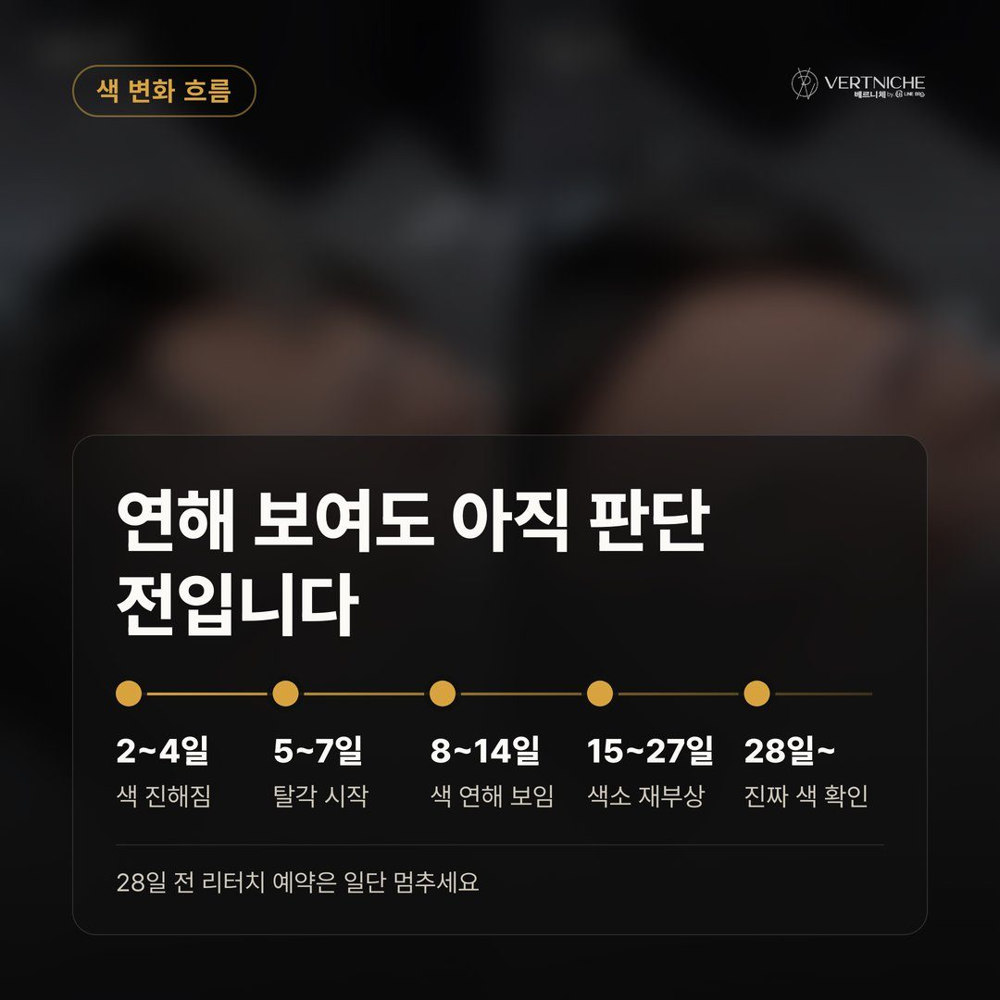
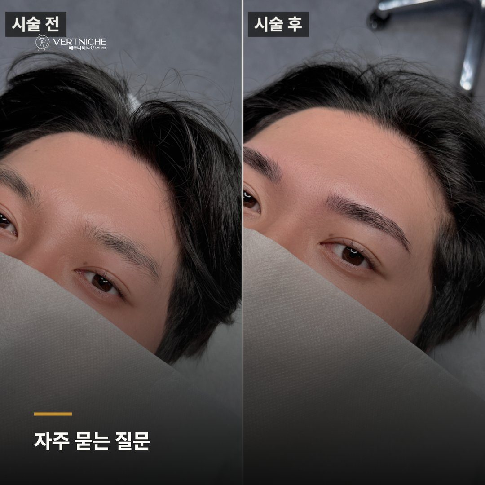
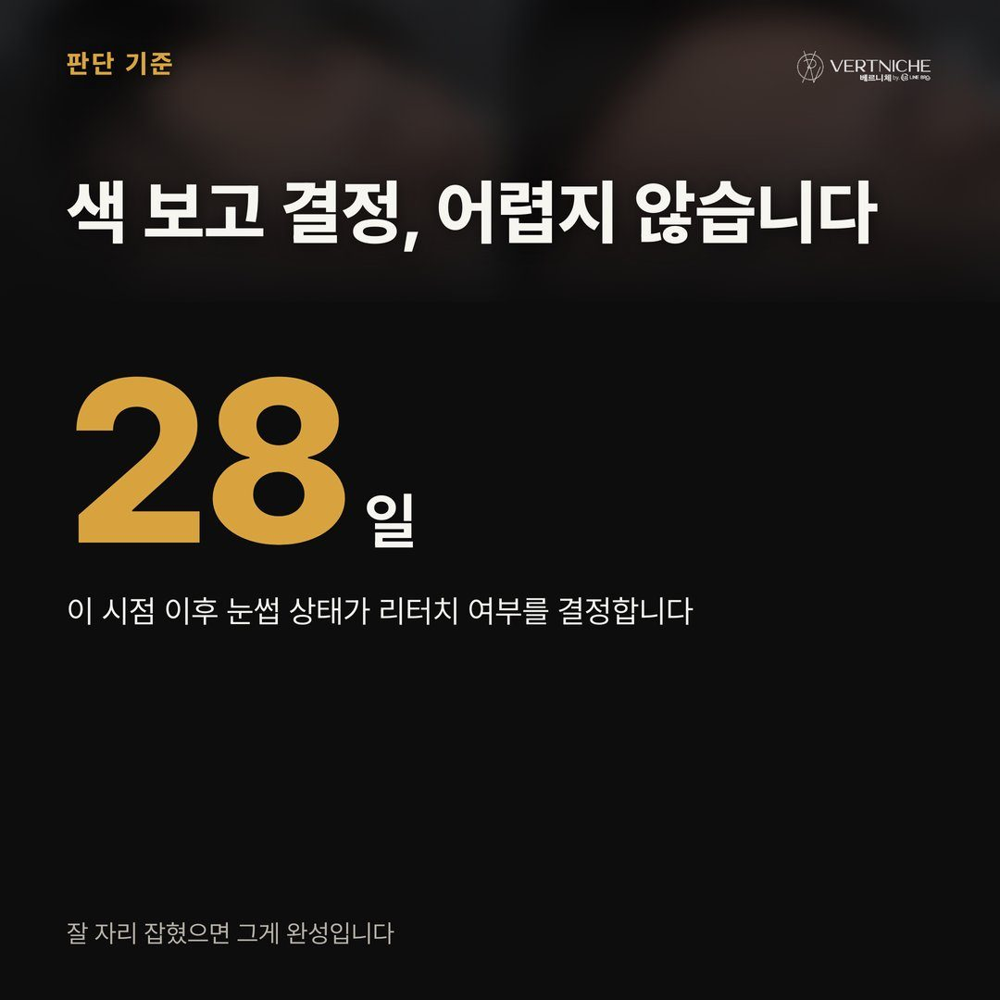
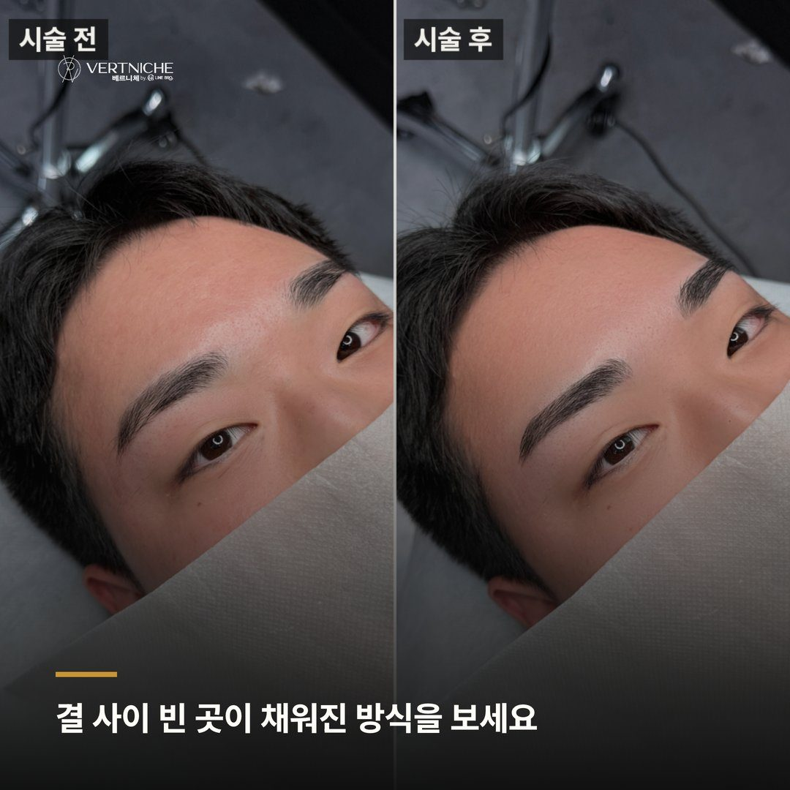
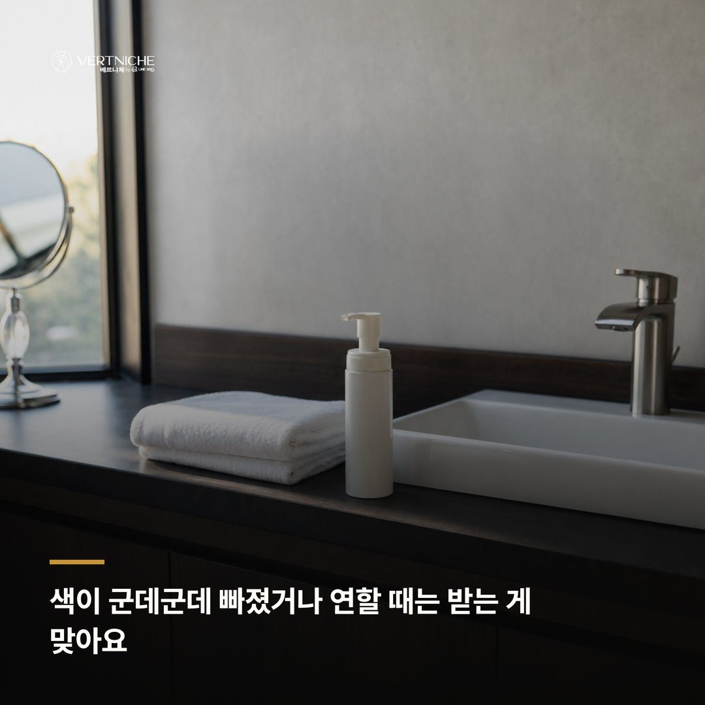
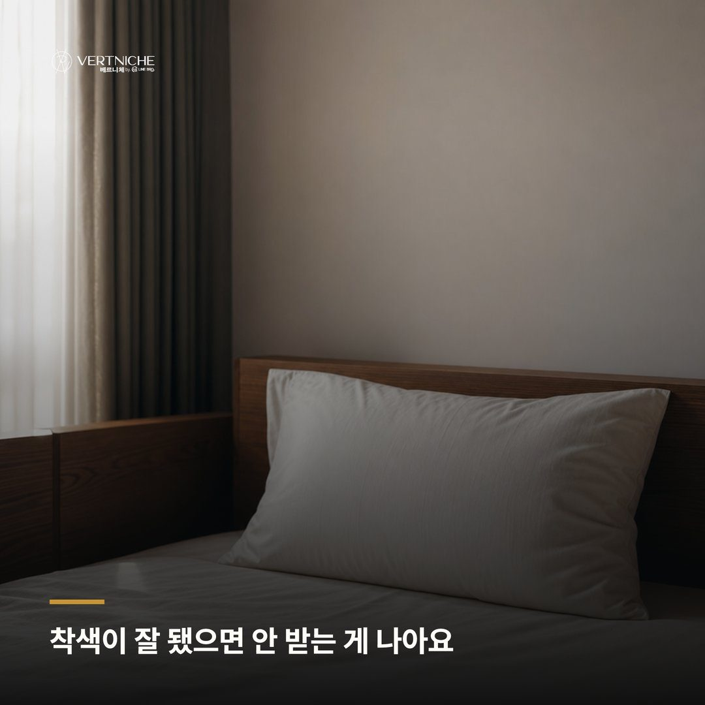

남자 눈썹 반영구 리터치, 받아야 할 때와 안 받아도 되는 때 분석

리터치, 28일 지나면 무조건 받아야 하는 거 아닌가요.
상담하다 보면 이 말을 제일 자주 들어요. 세트에 포함된 거니까 당연히 받아야 한다고 생각하시거든요. 근데 7년 동안 5,500명 넘게 보면서 느낀 건, 리터치가 필요한 분은 생각보다 훨씬 적다는 거예요. 잘 착색된 눈썹에 색소를 한 번 더 얹으면 자연스러움이 깨지는 경우가 꽤 있거든요. 그래서 이 글은 받아야 할 때와 안 받아도 되는 때를 솔직하게 나눠본 거예요.
리터치는 착색 상태를 보고 정하는 거예요
오해부터 짚고 갈게요. 리터치는 모든 분이 거치는 절차가 아니에요.
상담에서 직접 세어보면, 리터치가 진짜 필요한 분은 열 명 중 한두 명 정도예요. 나머지는 첫 시술에서 착색이 잘 잡혀서 굳이 안 하셔도 되는 상태로 오시는 거거든요. 그런데도 "포함된 거니까", "한 번 더 받으면 더 진해지겠지" 하는 생각으로 오시는 분들이 있어요.
여기서 문제가 생겨요. 색이 이미 자리 잡은 눈썹에 색소를 한 번 더 넣으면 밀도가 올라가면서 원래 잡아둔 자연스러움이 깨져요. 진하고 뭉툭하게 보이는 소위 짱구 눈썹이 되는 거죠. 그렇게 되면 이번엔 빼야 하는데, 넣는 것보다 빼는 게 훨씬 어렵거든요. 그래서 저는 28일 지나 오시면 리터치부터 잡는 게 아니라, 지금 착색이 어떻게 됐는지 거울로 같이 먼저 봐요.
색이 군데군데 빠졌거나 연할 때는 받는 게 맞아요
그럼 언제 받아야 하냐. 착색이 고르지 않게 됐을 때예요.
눈썹 앞은 진하게 남았는데 뒤쪽 색이 빠졌거나, 결 사이사이 빈 자리가 눈에 띄거나, 전체적으로 생각보다 연하게 자리 잡은 경우요. 이건 첫 시술 실력 문제가 아니라, 피부가 색소를 받아들이는 정도가 사람마다 달라서 생기는 일이에요. 지성 피부거나 유분이 많으면 색이 덜 남는 편이거든요.
이럴 때는 리터치로 빠진 자리를 채워야 밀도가 고르게 맞아요. 이 상태를 그냥 두면 시간이 지날수록 빈 자리가 더 도드라지더라고요. 리터치가 1회 포함이라 이런 경우엔 추가 비용 없이 보강하면 되고, 받아야 할 때는 확실하게 받는 게 맞아요. 참는다고 저절로 채워지는 게 아니니까요.
착색이 잘 됐으면 안 받는 게 나아요
반대로, 28일 지나 봤을 때 색이 고르게 자리 잡고 기존 눈썹결이랑 잘 어우러졌으면 저는 안 하는 걸 권해요.
손님 입장에선 좀 의아하실 수 있어요. 포함된 건데 왜 안 받게 하냐고요. 근데 잘 된 눈썹에 리터치를 얹으면 얻는 것보다 잃는 게 커요. 색이 진해지면 나중에 유행이 바뀌거나 모양을 바꾸고 싶을 때 조정할 여지가 줄어들거든요. 색은 얇게 유지하다가 필요할 때 채우는 게, 처음부터 꽉 채우는 것보다 항상 유리해요.
솔직히 매출만 생각하면 다 받으시라고 하는 게 편해요. 근데 저는 거울 앞에서 본인이 만족하는 게 먼저라서, 잘 된 건 잘 됐다고 말씀드리는 편이에요. 굳이 안 해도 되는 걸 하시게 만드는 건 베르니체 방식이 아니거든요.
아직 판단할 때가 아니면 더 기다려요
리터치는 시기도 중요해요.
시술 후 색은 한 흐름을 타요. 2~4일차엔 진해졌다가, 5~7일차에 탈각이 오고, 8~14일차엔 오히려 연해 보여요. 이때 색 빠진 것 같다고 급하게 리터치를 잡으려는 분들이 계신데, 이 시기는 아직 판단할 때가 아니에요. 15일 넘어가면서 피부 속 색소가 다시 올라오고, 28일쯤 돼야 진짜 색이 보이거든요.
그래서 리터치는 최소 28일 지나 최종 착색을 보고 정하는 거예요. 며칠 차이로 안 받아도 될 걸 받게 되는 경우가 생기니까, 애매하면 조금 더 두고 보자고 말씀드리는 편이에요.
자주 묻는 것들
리터치를 꼭 예약된 날에 받아야 하나요? 아니에요. 착색 상태를 보고 정하는 거라 28일 넘겨서 여유 있게 오셔도 돼요. 해외나 출장으로 일정 맞추기 어려운 분들도 계신데, 오실 수 있을 때 상태 보고 진행하면 돼요. 무리해서 날짜 맞추실 필요는 없어요.
리터치 안 받으면 눈썹이 금방 빠지나요? 착색이 잘 됐으면 리터치 없이도 오래가요. 리터치는 유지력을 늘리는 게 아니라 부족한 자리를 채우는 거라서, 첫 시술에서 고르게 잘 잡혔으면 안 받아도 문제없어요. 시간이 지나면서 자연스럽게 연해지긴 하는데, 그때 필요하면 그 시점에 받으셔도 돼요.
리터치받으면 더 자연스러워지나요? 꼭 그렇지는 않아요. 빠진 자리를 채우는 경우엔 더 고르고 자연스러워지지만, 이미 잘 된 눈썹에 받으면 오히려 진해져서 어색해질 수 있어요. 자연스러움은 리터치 횟수가 아니라 지금 착색 상태에 달려 있거든요.
포스팅 요약
• 리터치는 필수가 아니에요. 착색이 고르지 않거나 연할 때 받는 거고, 잘 자리 잡혔으면 안 하는 게 나아요.
• 판단은 최소 28일 지나 최종 착색을 보고 하세요. 8~14일차 연해 보이는 시기에 서두르지 않는 게 좋아요.
• 28일 지나고 애매하면 상태 같이 보고 정하면 돼요. 궁금한 건 아래에서 편하게 물어보세요.
대구 눈썹문신 엠보 시술, 시간은 얼마나 걸리고 리터치는 언제 하나
남자 눈썹문신, 비어 보이는 앞머리부터 봐야 하는 이유
대구 남자눈썹, 눈썹 정리 전에 눈썹칼 쓰는 방법 알아보기
더 보기 / 상담
남자관리 사례랑 눈썹문신 결과는 인스타에 계속 올리고 있어요. 시술 사진이랑 관리 팁은 아래 링크에서 더 보실 수 있습니다.
시술 사진









이 글은 네이버 블로그에도 같은 내용으로 올라가 있습니다.